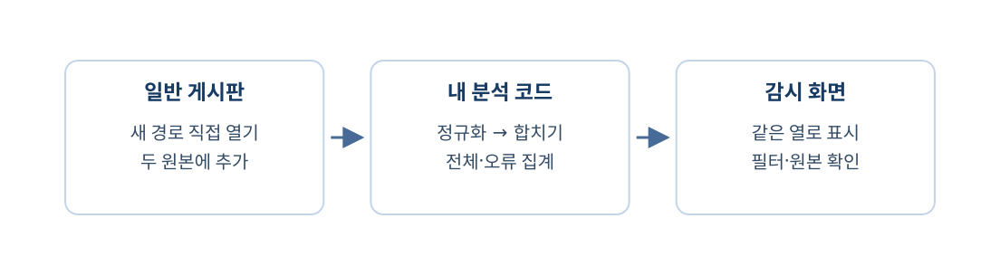

서로 다른 두 로그를 같은 모양으로 바꾸고 오류를 세었다. 이제 준비된 감시 화면에서 그 결과를 확인하자. 목표는 출처를 바꿔도 같은 조건으로 조회하고, 공통 열의 값이 원본과 맞는지 설명하는 것이다. 완성할 결과와 확인 기준부터 보자.

- 전체 관측 4·오류 관측 2와 네 행이 한 표에 보인다.
- 출처·오류 필터를 바꿔 표시되는 행을 예상할 수 있다.
- 앱 시각 누락과 두 출처의 원본을 확인한다.
1단계. 화면에 연결할 결과 확인하기
이번에는 새 화면이나 로그인을 만들지 않는다. 준비된 감시 화면이 우리가 만든 build_report 함수를 호출하게 하고, 두 출처가 같은 표로 보이는지 확인한다. 작업 폴더 열기
- VS Code의 파일 → 폴더 열기에서
C:\work\mini-watch-m5d3를 연다. - 터미널 → 새 터미널 → + 옆 화살표 → Command Prompt를 선택한다.
프로젝트 폴더의 Windows CMD
cd /d C:\work\mini-watch-m5d3
docker compose -f compose-monitor.yaml exec monitor-api python -m learning.report전체 관측: 4
오류 관측: 2이 숫자는 case.json의 앱 2행·Nginx 2행을 합쳐 계산한 결과다. 오류 관측은 상태가 400 이상인 두 행이다. 한 출처의 원본을 빠뜨렸거나 함수가 아직 비어 있으면 여기서 먼저 고친다.
분석 파일을 완성하지 못했으면
아래는 연결 확인에 쓰는 완성 파일이다. 해당 함수가 비어 있거나 파일이 없을 때만 같은 이름의 파일 전체를 교체하고 저장한다. 원본 case.json이나 DB를 수정하는 코드가 아니다. monitor/backend/learning/normalize_app.py — 전체 코드
def normalize_app(event, number):
return {
"id": f"app-{number}",
"source": "app",
"time": None,
"method": event["method"],
"path": event["path"],
"status_code": int(event["status_code"]),
"raw": event,
}monitor/backend/learning/normalize_nginx.py — 전체 코드
from datetime import datetime, timezone
def normalize_nginx(line, number):
prefix, request_text, suffix = line.split('"', 2)
method, path, protocol = request_text.split()
time_text = prefix.split("[", 1)[1].split("]", 1)[0]
parsed_time = datetime.strptime(time_text, "%d/%b/%Y:%H:%M:%S %z")
return {
"id": f"nginx-{number}",
"source": "nginx",
"time": parsed_time.astimezone(timezone.utc).isoformat(),
"method": method,
"path": path,
"status_code": int(suffix.split()[0]),
"raw": line,
}monitor/backend/learning/merge.py — 전체 코드
from learning.classroom_data import read_case
from learning.normalize_app import normalize_app
from learning.normalize_nginx import normalize_nginx
def load_normalized_events():
case = read_case()
events = []
for number, event in enumerate(case["app"], start=1):
events.append(normalize_app(event, number))
for number, line in enumerate(case["nginx"], start=1):
events.append(normalize_nginx(line, number))
return events
if __name__ == "__main__":
events = load_normalized_events()
for event in events:
print(event["id"], event["source"], event["method"], event["path"], event["status_code"])
print("전체 관측:", len(events))monitor/backend/learning/report.py — 전체 코드
from learning.merge import load_normalized_events
def build_report():
events = load_normalized_events()
errors = []
for event in events:
if event["status_code"] >= 400:
errors.append(event)
return {
"ready": True,
"events": events,
"total_count": len(events),
"error_count": len(errors),
}
if __name__ == "__main__":
report = build_report()
if report["ready"]:
print("전체 관측:", report["total_count"])
print("오류 관측:", report["error_count"])
else:
print(report["message"])입력이나 실행 중인 서비스가 없다면
현재 폴더에 start-class.cmd가 있는지 확인하고 Docker Desktop을 켠 뒤 아래 명령을 실행한다. 실제 요청을 다시 보내 case.json을 새로 준비하므로 시각은 바뀔 수 있지만 두 출처와 행 수는 같다. 기존 DB·계정·글은 지우지 않는다. 프로젝트 폴더의 Windows CMD
start-class.cmd명령이 실패하면 general-api와 general-gateway 로그에서 오류를 확인한다. 없어진 입력을 손으로 만든 예시 JSON으로 대신하지 않는다. 프로젝트 폴더의 Windows CMD
docker compose -f compose-general.yaml logs --tail 20 general-api general-gateway저장한 함수를 감시 서버에도 읽히게 하자
프로젝트 폴더의 Windows CMD
docker compose -f compose-monitor.yaml restart monitor-api터미널의 Python 실행은 매번 파일을 새로 읽지만, 실행 중이던 감시 서버는 이전 함수를 가지고 있을 수 있다. 감시 API만 재시작해 저장한 파일을 읽게 한다. DB를 지우거나 전체 이미지를 다시 만들 필요는 없다.
2단계. 준비된 감시 화면에서 네 행 보기
| 화면 | 주소 | 수업 아이디 | 수업 비밀번호 |
|---|---|---|---|
| 감시 서비스 | http://localhost:8082 | class-operator |
classroom1234! |
| 일반 게시판 | http://localhost:8081/login | class-student |
classroom1234! |
감시 화면에 들어가기
- 브라우저에서 http://localhost:8082를 연다. 이미 로그인한 적이 있으면 현재 로그인 확인을 누른다.
- 로그인 칸이 보이면 아이디에 class-operator, 비밀번호에 classroom1234!를 입력하고 로그인을 누른다.
- class-operator 사용자와 로그아웃 버튼이 보이면 아래로 내려 통합 로그 영역을 찾는다.
계정은 시작 명령이 미리 만든다. 가입이나 계정 생성은 하지 않는다. 일반 게시판 계정도 준비되어 있지만, 오늘의 두 조회 요청은 로그인 없이 가능하므로 게시판 로그인은 필수가 아니다. 위 비밀번호는 내 PC의 수업용 공개 값이다. 이 설정으로 외부에 배포하지 않는다. 같은 이름의 계정이 기존 DB에 있다면 기존 비밀번호를 바꾸지 않으므로 원래 비밀번호를 사용한다. 통합 결과 불러오기
- 통합 로그 영역의 통합 로그 불러오기를 누른다.
- 출처를 전체로 두고 오류만 보기는 끈다. 전체 관측 4, 오류 관측 2, 표시 관측 4와 표의 네 행을 확인한다.
전체 관측: 4 | 오류 관측: 2
표시 관측: 4
app-1 app GET / 200
app-2 app GET /training-missing 404
nginx-1 nginx GET / 200
nginx-2 nginx GET /training-missing 404그 위에 있는 요청 기록은 기존 앱 전송 기록을 보여 주는 별도 표다. 오늘 완성한 결과는 통합 로그 영역에서 본다. 이 표의 입력은 case.json이며, 서버의 모든 누적 로그를 실시간으로 보여 주는 화면은 아니다. app-1과 nginx-1은 같은 분석 파일에서 서로 다른 출처의 행을 구별하는 이름이다. 화면의 행 수 네 개를 요청 네 번이나 사용자 네 명으로 읽지 않는다.
코드 출력은 맞는데 화면이 다르면
네 파일을 Ctrl+S로 저장했는지 확인하고 monitor-api를 재시작한 뒤 통합 로그 불러오기를 다시 누른다. 브라우저 로그인 창이 나오면 준비된 감시 계정으로 로그인한다. 프로젝트 폴더의 Windows CMD
docker compose -f compose-monitor.yaml logs --tail 20 monitor-api정규화와 집계 함수를 완성하라는 안내가 계속 나오면 다른 폴더의 파일을 고쳤는지 확인한다. 새로고침만 반복하거나 DB를 초기화하지 않는다.
3단계. 같은 조건으로 두 출처를 골라 보기
출처만 바꿔 보자
필터 하나 적용하기
- 출처에서 app을 선택한다.
- 표시 관측이 2가 되고 app-1·app-2만 남는지 확인한다.
필터는 화면에 보여 줄 행을 고를 뿐 원본을 삭제하지 않는다. 전체 관측 4와 오류 관측 2는 전체 입력에 대한 값이고, 표시 관측 2는 현재 화면에 보이는 행 수다.
오류 조건을 함께 적용하자
두 조건 함께 적용하기
- 출처 app을 유지하고 오류만 보기를 켠다.
- 표시 관측 1과 app-2의 /training-missing·404를 확인한다.
출처를 바꾸고 같은 조건 비교하기
- 오류만 보기는 켜 둔 채 출처를 nginx로 바꾼다.
- 표시 관측 1과 nginx-2의 /training-missing·404를 확인한다.
출처는 바뀌었지만 오류를 고르는 조건은 status_code >= 400으로 같다. 문자열 위치를 매번 다시 찾지 않아도 되는 이유가 정규화다.
| 출처 | 오류만 보기 | 표시 관측 |
|---|---|---|
| 전체 | 끔 | 4 |
| app | 끔 | 2 |
| app | 켬 | 1 |
| nginx | 켬 | 1 |
| 전체 | 켬 | 2 |
마지막으로 출처를 전체로 바꾸어 오류 두 행을 함께 보자. 두 행이 모두 404여도 두 번의 서로 다른 공격을 탐지했다는 뜻은 아니다.
4단계. 시각과 원본으로 변환 결과 대조하기
빈 시각과 바꾼 시각을 구분하자
시각 열 비교하기
- 출처 전체·오류만 보기 켬 상태에서 app-2와 nginx-2의 시각 열을 비교한다.
- app 행은 원본에 없음, nginx 행은 원본에서 바꾼 시각이 나오는지 확인한다.
빈 시각은 변환 실패가 아니라 앱 원본에 시각이 없다는 표시다. Nginx의 시각은 원본에 적힌 UTC와의 차이까지 읽어 UTC로 맞췄다. 시계 숫자가 달라져도 같은 순간을 나타낼 수 있다.
같은 행의 원본을 펼치자
공통 열을 원본과 비교하기
- app-2의 원본 보기를 펼쳐 path와 status_code가 표의 값과 같은지 확인한다.
- nginx-2의 원본 보기를 펼쳐 요청 부분의 경로와 그 뒤 404가 표의 값과 같은지 확인한다.
raw를 남겨 둔 덕분에 변환을 잘못했는지 다시 확인할 수 있다. 앱 원본은 객체이고 Nginx 원본은 문자열이라는 차이도 여기에 남아 있다. 정규화는 원본을 모두 같은 글자로 덮어쓰는 일이 아니다. 처음 보기로 복구하기
- 오류만 보기를 끄고 출처를 전체로 둔다.
- 표시 관측 4가 다시 나오는지 확인한다. 원본 보기 토글은 닫아도 원본이 지워지지 않는다.
5단계. 내가 구현한 범위 설명하기
버튼에서 함수까지 연결된 부분도 확인하자. monitor/backend/routes/analysis.py에는 아래 코드가 준비되어 있다. API는 화면의 요청을 받아 Python 결과를 돌려주는 접점이며, 여기서는 /api/analysis라는 주소를 쓴다. routes/analysis.py — 준비된 연결 부분, 읽기용 발췌
from learning.report import build_report
@analysis_bp.get("/api/analysis")
def analysis():
error = api_access_error()
if error:
return error
try:
return build_report()
except (OSError, ValueError) as error:
return {"error": str(error)}, 400로그인 권한을 확인한 뒤 build_report()를 호출하고 그 반환값을 보낸다. 화면의 통합 로그 불러오기 버튼이 이 주소에 요청한다. 숫자를 화면에 따로 적어 둔 것이 아니라 같은 events에서 만든 집계와 행을 받은 것이다.
| 직접 완성한 파일 | 최종 화면에 기여한 것 |
|---|---|
normalize_app.py |
앱 원본 값을 공통 항목으로 옮기고 없는 시각을 None으로 남겼다. |
normalize_nginx.py |
긴 문자열에서 요청·상태·시각을 읽어 같은 항목과 타입으로 맞췄다. |
merge.py |
출처와 원본을 보존하며 두 결과를 하나의 목록으로 모았다. |
report.py |
같은 상태 조건으로 전체 관측과 오류 관측을 집계했다. |
이 결과는 SIEM의 일부 기능인 정규화·통합 조회를 직접 구현한 것이다. 기기와 계정의 탐지 결과를 연계하는 XDR 전체나 차단 절차를 실행하는 SOAR를 만든 것은 아니다.
- 서로 다른 두 원본이 같은 열로 보인다.
- 출처·오류 필터를 바꿔도 원본 네 행은 유지된다.
- 시각 누락을 숨기지 않고, 한 행의 공통 값과 원본을 직접 대조할 수 있다.
화면 확인을 마쳤으면 아래 명령으로 두 서비스를 멈출 수 있다. stop은 컨테이너 실행만 멈추며 코드·입력 파일·DB 볼륨을 삭제하지 않는다. 프로젝트 폴더의 Windows CMD
docker compose -f compose-general.yaml stop
docker compose -f compose-monitor.yaml stop확인문제
확인문제 1. 화면과 터미널이 같은 분석 결과를 쓰게 하는 함수는 무엇인가?
정답과 해설
report.py의 build_report이다. 준비된 API가 이 함수를 호출하고 화면은 그 반환값을 표시한다.
확인문제 2. Python 파일 저장 후 monitor-api를 재시작하는 이유는 무엇인가?
정답과 해설
이미 실행 중인 서버가 이전에 읽은 함수를 쓰고 있을 수 있기 때문이다. 저장한 코드를 다시 읽게 하며 DB 초기화는 아니다.
확인문제 3. 통합 로그 불러오기를 누를 때 새 요청 두 건을 보내는가?
정답과 해설
아니다. 저장된 case.json을 정규화하고 집계해 보여 준다. 새 요청과 입력 준비는 시작 수집기의 역할이다.
확인문제 4. 전체 관측 4·오류 관측 2인데 표시 관측 1일 수 있는가?
정답과 해설
가능하다. 앞의 두 값은 전체 입력 집계이고, 표시 관측은 현재 출처·오류 필터에 맞는 행 수다.
확인문제 5. 출처 app·오류만 보기 켬이면 어떤 행이 남는가?
정답과 해설
app-2의 /training-missing·404 한 행이다. app 출처이면서 상태가400이상인 두 조건을 모두 만족한다.
확인문제 6. 같은 오류 필터를 nginx에도 적용할 수 있는 이유는 무엇인가?
정답과 해설
두 원본을 같은 status_code 항목과 숫자 타입으로 정규화했기 때문이다. 원본 위치를 다시 분석하지 않아도 된다.
확인문제 7. app 시각이 원본에 없음으로 표시되면 오류인가?
정답과 해설
아니다. 앱 원본에 시각이 없어 None을 보존한 결과다. 현재 시각을 만들어 넣는 것보다 사실에 맞다.
확인문제 8. 원본 보기를 펼쳐 무엇을 확인하는가?
정답과 해설
공통 열의 경로·상태·시각이 해당 행의 원본과 맞는지 확인한다. source와 raw가 변환 결과의 근거를 남긴다.
확인문제 9. 오류 로그 두 행은 서로 다른 공격 두 건인가?
정답과 해설
아니다. 준비 도구의 없는 경로 요청 한 건을 두 프로그램이 관측했다. 로그 수와 요청 수·공격 판정을 구분한다.
확인문제 10. 이번 결과를 완전한 SOAR라고 부를 수 없는 이유는 무엇인가?
정답과 해설
조치 도구 연결·승인·실제 차단 같은 대응 절차를 구현하지 않았기 때문이다. 이번 범위는 정규화와 통합 조회·집계이다.
서로 다른 로그를 정규화하면 같은 조건으로 함께 볼 수 있다. 동시에 출처·원본·누락을 남겨야 그 결과를 믿고 해석할 수 있다.